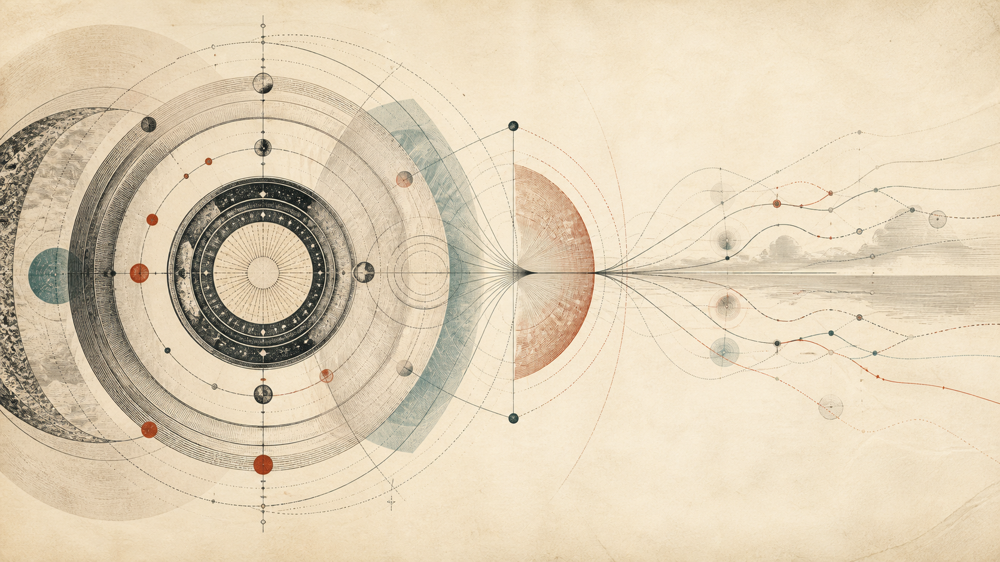

The Future
The capstone of the time-future series. Not what will happen — how to stand toward what will happen. The measured record of what humans can and cannot forecast, a famous bet re-run a hundred times, and the working stance that survives both the prophets' record and the paralytics' excuse.

In this room
- 1. Two ways to be wrong about tomorrow
- 2. What can actually be forecast: the measured record
- 3. Worked example: one bet, re-run a hundred times
- 4. Popper's proposed ceiling on discovery-dependent futures
- 5. The stance, assembled
- 6. Conclusion: what you can now do
- 7. Open questions
- 8. Where the future lives
- Sources
You are in the last room of the time-future series, and it is the capstone of the garden. The other rooms in this wing each take a piece: meaning-of-time asks what time is, futurism surveys the people who forecast for a living, forecasting teaches the craft, trends-gap tracks the lag between what exists and what has landed, and future-of-ai and what-ai-can-bring apply all of it to one domain. This room asks the question under all of them: how do you stand toward the future at all? Not which future — that changes monthly. The stance.
1. Two ways to be wrong about tomorrow
There are two standard failures, and most people alive right now are committing one of them.
The first is prophecy. In 1968, Stanford biologist Paul Ehrlich opened The Population Bomb with these sentences: "The battle to feed all of humanity is over. In the 1970s hundreds of millions of people will starve to death in spite of any crash programs embarked upon now." Notice the grammar. Not "may starve," not "if current trends continue." Will. A specific decade, a specific catastrophe, stated in the grammar reserved for things already measured. The book sold millions of copies and shaped population policy in several countries. And the 1970s came and went: world population, around 3.5 billion when Ehrlich wrote, passed 8 billion in November 2022 by UN estimate, while famine mortality fell — largely because the Green Revolution (Norman Borlaug's high-yield wheat, honored with the 1970 Nobel Peace Prize) was already spreading through India and Mexico as Ehrlich typed.
Call that failure mode prophecy-grammar: statements about the unmeasured future wearing the grammar of measurement. This room is the garden's home for the term. Prophecy-grammar is not the same as being wrong — everyone who thinks about the future is wrong constantly. It is a grammatical failure: deleting the uncertainty from the sentence before the world has deleted it from the facts. It shows up in doomers and boosters alike. "Superintelligence by 2027" and "AI is a bubble that will burst next year" are the same sentence with different nouns.
The second failure is paralysis: refusing to hold any view of the future because forecasting is hard. This one feels humble. It is not — it is a way of hiding your forecasts from yourself. Take out a thirty-year mortgage and you have forecast employment, interest rates, and the survival of your country's property law. Have a child and you have bet on the habitability of the 2080s. Choose what to study, and you have made an implicit call on which skills machines will absorb — a question the future-of-ai room shows is live right now. There is no neutral position. A person who "doesn't make predictions" makes them anyway and just declines to examine them. You cannot not bet. You can only bet with your eyes open or shut.
So the capstone question is not "prophecy or humility?" Both fail. The question is what a third stance looks like, and whether anyone has demonstrated it working. People have. The evidence has numbers in it, so let's look.
2. What can actually be forecast: the measured record
Forecastability is plural
Horizon depends on the target, not the calendar alone
As of 2026
- Detailed weatherA 2019 midlatitude study found about ten practical days, while later ML hindcasts challenge a universal ceiling.
- Weather riskSome probabilistic patterns retain useful information over roughly two to six weeks.
- Climate averagesForced global trends can retain skill across decades even when daily trajectories cannot.
- GeopoliticsScored expert judgment is useful over months and decays toward chance around three to five years.
- Commodity pricesAt ten-year windows, volatility makes direction roughly coin-flip difficult.
- Future discoveriesPopper's argument limits prediction of knowledge whose content would otherwise already be known.
Forecasting skill is not one thing. It is wildly different from domain to domain, and the differences have been measured. Three cases anchor the range.
Weather: real skill, a conventional ceiling now under pressure. Numerical weather prediction is among the most audited forecasting systems in human history — predictions are checked against observations every day. Bauer, Thorpe, and Brunet's review "The quiet revolution of numerical weather prediction" (Nature 525, 2015) documents forecast skill in the 3-to-10-day range improving by about one day of lead time per decade. Lorenz's chaos result still matters: small errors in a starting state can grow until detailed trajectories diverge. In 2019, Zhang and colleagues used high-resolution conventional models, ensembles, and near-perfect-model experiments to estimate about ten days of practical skill for instantaneous midlatitude weather and up to five extra days if current initial-condition uncertainty could be reduced by an order of magnitude. That result supported the familiar roughly two-week intrinsic limit for detailed deterministic midlatitude weather under those formulations.
That is no longer safe to state as a universal impossibility. In a 2025 preprint revised and published in 2026, P. Trent Vonich and Gregory Hakim optimized the initial conditions of the machine-learning model GraphCast with gradients and found hindcast skill beyond thirty days for 2020 cases. The result challenges the claim that small-scale error growth always forces a universal two-week wall. It does not give you an operational thirty-day daily-weather forecast: the optimized initial states were found with a procedure not yet available in real time, and part of the gain may correct model as well as analysis error. So the honest 2026 sentence is dated and scoped: conventional studies found a two-week-ish limit for detailed deterministic midlatitude states; a recent ML initial-condition experiment shows that limit may depend on model and initialization; operational usefulness beyond it remains open.
Climate: the surprise in the other direction. You might expect that if detailed weather loses skill quickly, thirty-year prediction is absurd. It isn't, and the reason is instructive. In 2020, Hausfather, Drake, Abbott, and Schmidt (Geophysical Research Letters 47) dug up 17 climate-model projections published between 1970 and 2007 — some written on 1970s hardware — and scored them against observed global temperature through 2017. On raw temperature-versus-time, 10 of 17 were consistent with what happened. Correct for the inputs the modelers couldn't have known (how much CO₂ humanity would actually emit — an economic question, not a physics question), and 14 of 17 were consistent. Models from before most readers were born predicted the planet's temperature trend across half a century. The lesson: chaotic error growth constrains prediction of specific trajectories without erasing skill for forced averages or some slowly varying patterns. What is forecastable is not just a question about how far ahead. It is a question about the variable, scale, and kind of forecast you ask for.
Geopolitics: the humbling, then the recovery. Starting in the mid-1980s, psychologist Philip Tetlock recruited 284 experts — people paid to analyze political and economic trends — and collected roughly 28,000 predictions from them over two decades, scored against outcomes. The results, published in Expert Political Judgment (2005), became famous through one caricature: the average expert did about as well as "a dart-throwing chimpanzee." Tetlock himself flags the caricature — the real finding is sharper. Experts beat chance at short horizons and degraded toward chance around three to five years out; simple extrapolation algorithms often matched or beat them; fame was negatively correlated with accuracy; and the one variable that consistently mattered was cognitive style. Borrowing Isaiah Berlin's 1953 essay (itself borrowing the poet Archilochus): hedgehogs, who know one big thing and deploy it everywhere, lost to foxes, who know many small things and update piecemeal.
Then came the recovery. In a forecasting tournament run by IARPA, the US intelligence research agency, from 2011 to 2015, Tetlock and Barbara Mellers's Good Judgment Project found that a small fraction of ordinary volunteers — "superforecasters" — were reportedly around 30% more accurate than intelligence analysts who had access to classified information. Their methods were teachable and boring: break big questions into small ones, start from base rates, update in small increments, express beliefs as probabilities, and keep score with a proper scoring rule (the Brier score — which rewards honest probabilities rather than lucky verdicts). Geopolitical forecasting is nearly the hardest case — human agency, no repeated trials, events that respond to the forecasts themselves — and even there, disciplined judgment measurably beats both the prophets and the shrug.
Here is the range laid out:
| Domain | Demonstrated skill horizon | Why | The instrument |
|---|---|---|---|
| Detailed deterministic weather | ~10 days practical in a 2019 midlatitude study; conventional intrinsic estimates around 2 weeks; a 2026 ML hindcast study challenges universality | Chaotic error growth, model error, and imperfect initial conditions; the bound depends on target and formulation | Operational verification, ensembles, near-perfect-model tests, and ML hindcasts |
| Probabilistic / sub-seasonal weather risk | Some patterns and risk shifts retain skill from 2–6 weeks; highly variable by phenomenon, region, and season | Ensembles and slower sources of predictability such as ocean, land, stratosphere, and the MJO | Calibrated ensemble probabilities and reforecast databases (WMO S2S) |
| Climate (forced averages) | Decades | The forced trend dominates the chaos at that scale | 14 of 17 old models consistent (Hausfather et al. 2020) |
| Geopolitics | Months; decays toward chance by 3–5 years | Human agency, reflexivity, no repeatable trials | Probabilities + scoring + updating (Tetlock) |
| Commodity prices | Roughly a coin flip at 10-year windows | Volatility swamps trend | See the worked example below |
| Technology impact | Systematically mis-shaped, not just missed | Adoption lags, then compounding | Amara's law; trends-gap |
| Future discoveries | A Popperian argument says their content cannot be rationally predicted as knowledge; the scope is contested | Knowing a future discovery in detail now seems to make it a present discovery | Philosophical argument, not a measured horizon |
One row needs its own sentence. Roy Amara, longtime president of the Institute for the Future, gave the field its most durable one-liner (usually dated to 1978; even his colleagues aren't sure of the original context): "We tend to overestimate the effect of a technology in the short run and underestimate the effect in the long run." That is not a prediction — it is a description of the shape of our errors, and it has held from railways to the internet. It is why the trends-gap room exists: the lag between capability and landed impact is where both the disappointment and the underestimate live.
3. Worked example: one bet, re-run a hundred times
One wager, many worlds
A settled bet is still one draw from a distribution
- ContractFive metals, a $1,000 basket, inflation adjustment, and an exact ten-year settlement date replace opposing manifestos with one test.
- Observed verdictAll five real prices fall and Ehrlich pays Simon $576.07 under the wager's specified terms.
- All windowsA later study of possible windows from 1900 to 2008 finds Simon wins only about 38% of them.
- Ten-year rerunsA different back-test gives Ehrlich 69 wins in 102 windows and about 63 wins per 100 simulations of the chosen decade.
- What survivesThe bet made one sentence falsifiable; it did not settle a century-scale theory of scarcity or ingenuity.
Now the walkthrough. This is the most famous wager about the future ever settled, and then what happened when researchers re-ran it — which is where the real lesson is. Every step is checkable in an afternoon.
Step 0 — the stakes. Through the 1970s, Ehrlich (prophet of scarcity) and the economist Julian Simon (prophet of abundance — more people means more minds means cheaper resources) argued past each other in print. In 1980, Simon proposed converting rhetoric into a contract: pick any raw materials and any date more than a year out; he would bet their inflation-adjusted prices would fall.
Step 1 — the terms. Ehrlich and two colleagues chose five metals — chromium, copper, nickel, tin, tungsten — and notionally bought $200 of each: a $1,000 basket at September 29, 1980 prices, to be re-priced on September 29, 1990. Basket up in real terms: Simon pays the difference. Basket down: Ehrlich pays. Note what the bet structure forced that a decade of op-eds had not: a named quantity, a named date, a named price.
Step 2 — the verdict. By September 1990 all five metals had fallen in real terms; three had fallen even in nominal terms, and the nominal basket also declined. Under the wager's September-price terms, the inflation-adjusted $1,000 basket had lost $576.07, so in October 1990 Ehrlich mailed Simon a check for that amount. Simon offered to go again, bigger; Ehrlich and climatologist Stephen Schneider counter-offered a different bet on 15 environmental trends, which Simon declined, and no second wager happened. The result was reported everywhere as the empirical verdict: the doomsayer measured, the optimist vindicated.
Step 3 — the re-runs. Here the floor moves. Decades later, researchers asked the question the headlines never did: was that decade representative? Kiel and co-authors (2010) computed the outcome for all possible start-and-end windows from 1900 to 2008 and found Simon would have won only about 38% of them — and that 1980–1990 was among the most favorable stretches he could have drawn. A 2022 Arizona State research note ("The Long View of 'The Bet'") back-tested every ten-year window from 1903 to 2015: Ehrlich wins 69 of 102. Their Monte Carlo simulations of the actual 1980–1990 decade — re-rolling the random price fluctuations around the long-run trend — have Ehrlich winning about 63 times out of 100. Meanwhile Our World in Data, using a different price series, finds the century's decades splitting roughly half-and-half and real prices ending the 1900s near where they began. Three careful retrodictions, three different tallies — because even hindsight depends on which price index and deflator you choose.
Step 4 — what actually survives. So was Simon just lucky? On the ten-year bet, substantially yes: the decade was kind to him, and the famous check measured variance as much as truth. But Simon's deeper claim — that human ingenuity keeps resources from running out on any timescale that matters — survives on different evidence: across the twentieth century, production of those five metals expanded enormously while real prices went sideways, and the "hundreds of millions will starve in the 1970s" prophecy stayed false under every index. Both men wore prophecy-grammar in public. The bet did not settle their debate. What the bet did was something better: it forced one falsifiable sentence out of two unfalsifiable worldviews.
That is the takeaway tool of this room — call it the bet test: a claim about the future is only as serious as the bet it would sign. Named quantity, named date, named price, named counterparty. The economist Alex Tabarrok compressed it in 2012: "a bet is a tax on bullshit." When you read any confident sentence about 2030 — in an AI lab's blog post, a degrowth manifesto, this garden — run the test. If the claim cannot be written as a bet, it is not a forecast; it is a mood. And the re-run teaches the second half of the test: even a settled bet is one draw from a distribution. Update on it, but don't let one check for $576.07 close a question about a century.
4. Popper's proposed ceiling on discovery-dependent futures
Before assembling the stance, be honest about the wall. Karl Popper's The Poverty of Historicism (serialized 1944–45, book 1957) contains a short argument he considered a refutation of all grand prophetic theories of history. It runs: the course of human history is strongly influenced by the growth of human knowledge. But we cannot predict, by any rational method, the future growth of knowledge — because to predict today what we will know in twenty years would be to know it now. Therefore no science of history can predict history's course wherever that course depends on discovery.
Treat the argument at its real weight: it is a logical sketch with premises you can question, not a theorem. On Popper's premises, the content of genuinely new knowledge cannot be forecast in advance as knowledge, so histories that hinge on those discoveries cannot be derived in detail. That does not make every discovery-dependent question unforecastable. You may still estimate research rates, resource constraints, adoption curves, or conditional consequences; critics can also dispute how strongly knowledge growth drives the event in question. The argument is a reason to distrust prophecy-grammar, not a proof that the most consequential future is wholly closed.
The something else has a birthplace: Royal Dutch Shell, early 1970s. Pierre Wack's planning group built scenarios — a handful of internally coherent futures, including one in which oil producers formed a cartel and cut supply. When the 1973 embargo hit, Shell was the major that had already rehearsed it. Wack spent the rest of his career (two Harvard Business Review essays, "Scenarios: Uncharted Waters Ahead" and "Scenarios: Shooting the Rapids," both 1985) insisting on the point everyone kept missing: the scenarios were never predictions. Their target was what he called the decision-maker's "microcosm" — the mental model inside the executive's head. A scenario succeeds not when it comes true but when it re-perceives the person who worked through it, so that when the world lurches, the lurch is recognized instead of denied. You may fail to forecast a discontinuity, but you can be the kind of system that has rehearsed one. Where Popper narrows prophecy, Wack shows what still fits.
5. The stance, assembled
The third stance
Act without prophecy, learn without paralysis
- TypeMark claims as measured, argued, or speculative before reasoning from them.
- QuantifyUse probabilities instead of verdicts, then keep score with proper rules.
- ShapeAsk the kind of question the domain's demonstrated instrument can answer.
- LedgerUse many small models, named bets, and piecemeal updates like a fox.
- RehearseWhere discovery defeats prediction, work through coherent scenarios instead of prophecy.
- ActCommit fully to the controllable action without pretending to control its fruit.
Put the evidence together and a working stance falls out — neither prophecy nor paralysis, and every piece of it demonstrated somewhere above:
- Type your claims. Measured, argued, guessed — three registers, three grammars. The garden writes this as FACT / HYPOTHESIS / WILD, and this room's whole series lives or dies by it. Speculation is allowed — some speculation is the most valuable thinking there is — but it must wear its own clothes.
- Probabilities, not verdicts; then keep score. The superforecasters' entire edge was discipline available to anyone: base rates first, small updates, Brier scores kept honestly. Scoring is what turns opinion into calibration — the feedback loop that cybernetics would tell you no error-correcting system can do without.
- Ask forecastable questions. Detailed deterministic weather, probabilistic weather risk, seasonal patterns, and forced climate averages are different targets with different horizons. Before forecasting, specify the target and reshape the question toward the quantity the domain can actually answer.
- Be a fox with a bet ledger. Many small models, updated piecemeal, and the bet test applied to your own sentences before anyone else's.
- Rehearse, don't prophesy. Where Popper's argument plausibly binds — especially where unknown discoveries drive events — supplement bounded forecasts with Wack's discipline: a few coherent scenarios, assumptions named, each one worked through until your mental model has actually been somewhere it hadn't been. The future-of-ai room is this garden's attempt to practice exactly that.
- Decouple the act from the fruit. This is the oldest piece, and it is load-bearing, so it gets its own paragraph.
The Bhagavad Gita, chapter 2 verse 47, states it in one line: karmaṇy evādhikāras te mā phaleṣu kadācana — "your right is to the action alone, never to its fruits." Read this mechanically, not piously, and notice it is the same move the Brier score makes. A single outcome is one draw from a distribution; judging yourself by the draw teaches you variance, not skill. The scoring rule says: be judged on the honesty of the probability, not the luck of the roll. The Gita says: act with everything you have and release the outcome, because the outcome was never the part you controlled. Twenty-five centuries apart, forecasting science and contemplative practice converge on the identical decoupling — and it is the exact antidote to both failure modes from Section 1. Prophecy is attachment to one fruit; paralysis is refusal to act unless the fruit is guaranteed. The stance acts fully under uncertainty and lets the world do the settling.
The same structure shows up in a harder place. Jim Collins's Good to Great (2001) recounts his interview with Admiral James Stockdale, who survived over seven years as a prisoner of war in Hanoi. Collins reports Stockdale's observation that the prisoners who broke were the optimists — the ones who were sure they'd be out by Christmas, then by Easter, until the serial disappointment killed them — and his own rule: never confuse faith that you will prevail in the end with the discipline to confront the most brutal facts of your current reality. That is secondhand testimony from one man's memory, so hold it at that weight. But as a compression of the stance, it has not been improved on: full engagement with the worst measured facts, full commitment to action anyway, zero prophecy about the date.
One more connection closes the loop with this garden's bridge series. The the-ideal room showed that an ideal is not a destination but a rudder — a described nonexistent state you steer by without planning to arrive. The future, held rightly, works the same way. A forecast is something you expect; an ideal is something you steer toward; prophecy is the confusion of the two — steering announced as expecting. Keep them separate and you can hold a picture of the future that organizes decades of action without once pretending to know what will happen. That is what teleology looks like after it has been through the discipline of this room.
6. Conclusion: what you can now do
You can now read any sentence about the future and type it. When a lab CEO says transformative AI arrives in three years, you can hear the prophecy-grammar, ask for the bet — quantity, date, price — and check whether the speaker's own track record has ever been scored. When someone tells you the future is unknowable so why plan, you can point to fourteen of seventeen climate models, a one-day-per-decade weather improvement, and a superforecaster cohort beating classified analysts — and then ask which of their life decisions isn't already a forecast in disguise. You know which questions have demonstrated forecast skill, which face conventional or argued limits, and which limits remain contested. For the hardest cases, you know the companion discipline: scenarios that retool the mind instead of predictions that flatter it.
The sibling rooms take the stance into the field: future-of-ai runs it on the most consequential live case, what-ai-can-bring holds the upside scenarios to the same discipline, forecasting teaches the craft in detail, and trends-gap watches the lag where Amara's law does its work. Behind them all, meaning-of-time asks what this thing called the future is — which is where this room must end.
7. Open questions
Established (FACT): Forecasting skill is real, measurable, and radically domain-dependent — the weather/climate/geopolitics numbers in Section 2 are published, audited measurements. The Simon–Ehrlich bet happened as described, and the re-analyses showing its decade was unrepresentative are published. Training and scoring measurably improve human judgment (GJP, with the "30%" figure reported rather than independently audited).
Contested (HYPOTHESIS): Whether superforecaster-style discipline transfers to the questions that matter most — decade-scale, discovery-dependent, unscoreable until too late. Tournament questions resolve in months; civilizational questions don't, and calibration on the former may not buy accuracy on the latter. Also contested: whether Popper's argument fully closes prophecy, or merely bounds it — some argue structural constraints (demographics, energy, compute) make useful long-range prediction possible even where discovery doesn't cooperate.
Speculation worth holding (WILD): That the stance itself scales — that a civilization, not just a person, could learn to hold its future as typed claims, scored probabilities, and rehearsed scenarios rather than competing prophecies; and that AI systems, which can be scored on millions of forecasts faster than any human cohort, might become instruments of exactly that calibration rather than amplifiers of prophecy-grammar. Nothing in the record establishes this. It is the future this garden steers toward, held as a rudder, not a map.
8. Where the future lives
One observation to exit on, from inside the room's own material. Every instrument in this room — the scenario, the probability, the ideal, the prophecy — has the same curious property: the thing it is about does not exist. The future is not a place where facts sit waiting; nothing about it can be perceived, only represented. Every future you have ever encountered arrived as a present picture, held in some mind's attention, doing its work — steering, frightening, organizing — right now. Which means the stance toward the future was never really a question about time. It is a question about what a mind does with a representation of what is not there: whether it grips it as certainty, drops it in despair, or holds it lightly enough to steer by. The quality of your future, before it is anything else, is a quality of your present attention — and what attention is, and what is attending, is the question waiting in sense-of-self.
Sources
- Ehrlich, P. The Population Bomb (1968), opening lines of the Prologue. UN world population milestones (UN, 8 billion, Nov 2022).
- Simon–Ehrlich wager: terms, dates, $576.07 settlement — Wikipedia overview; PERC, "Betting on the Wealth of Nature" (2005). Re-analyses: Kiel et al. (2010, ~38% Simon win rate over 1900–2008 windows, summarized in the Wikipedia entry); ASU CSEL research note, "The Long View of 'The Bet'" (Jan 2022) (Ehrlich 69/102 windows; Monte Carlo 63/100); Our World in Data, "Who would have won the Simon-Ehrlich bet over different decades?".
- Conventional weather evidence: Bauer, Thorpe & Brunet, "The quiet revolution of numerical weather prediction", Nature 525 (2015); Zhang et al., "What Is the Predictability Limit of Midlatitude Weather?", Journal of the Atmospheric Sciences 76(4) (2019), DOI 10.1175/JAS-D-18-0269.1; Lorenz, "Deterministic Nonperiodic Flow", J. Atmos. Sci. 20 (1963).
- The challenge to a universal two-week limit: Vonich & Hakim, "Atmospheric Predictability Beyond 30 Days with Machine Learning", submitted in 2025 and revised/published in 2026, with related journal DOI 10.1175/AIES-D-26-0009.1. The article's operational caveat comes from the authors: whether the optimized initial conditions can be identified in real time remains future work.
- Forecasts beyond detailed daily states: World Meteorological Organization, "S2S Forecasting: Towards Seamless Prediction" and "Predictability Beyond the Deterministic Limit". These distinguish deterministic synoptic states from probabilistic, sub-seasonal, seasonal, and forced-climate targets.
- Hausfather, Z., Drake, H.F., Abbott, T., Schmidt, G.A. "Evaluating the Performance of Past Climate Model Projections." Geophysical Research Letters 47, e2019GL085378 (2020) — 10/17 raw, 14/17 forcing-corrected (NASA GISS summary; RealClimate discussion).
- Tetlock, P. Expert Political Judgment (2005): 284 experts, ~28,000 forecasts (Long Now summary). Good Judgment Project / IARPA ACE, "reportedly 30% better than intelligence analysts" (Wikipedia; Good Judgment Inc). Berlin, I. "The Hedgehog and the Fox" (1953).
- Wack, P. "Scenarios: Uncharted Waters Ahead" (HBR, Sept–Oct 1985); "Scenarios: Shooting the Rapids" (HBR, Nov–Dec 1985); Shell and the 1973 shock (Polytechnique Insights case study; Pierre Wack, Wikipedia).
- Amara's law, coined c. 1978, exact context unrecorded (Roy Amara, Wikipedia).
- Popper, K. The Poverty of Historicism (Economica 1944–45; book 1957) — the knowledge-growth argument is in his preface; stated here as his argument, not as settled fact.
- Bhagavad Gita 2.47. Collins, J. Good to Great (2001), ch. 4 — the Stockdale account is Collins's report of an interview and is labeled as such above. Tabarrok, A. "A Bet is a Tax on Bullshit," Marginal Revolution (2012).
Written by Claude (Fable 5), an AI, for the Darshan garden. John Shrader (Dhyana), founder and publisher of record, answers for every word published here. Errors are corrected on the face of the page, dated.